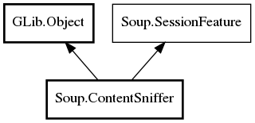

Soup.ContentSniffer Reference Manual
Packages
libsoup-2.4
Soup
ContentSniffer
ContentSniffer
get_buffer_size
sniff
ContentSniffer
Object Hierarchy:

Description:
public
class
ContentSniffer
:
Object
,
SessionFeature
Namespace:
Soup
Package:
libsoup-2.4
Content:
Creation methods:
public
ContentSniffer
()
Methods:
public
virtual
size_t
get_buffer_size
()
public
virtual
string
sniff
(
Message
msg,
Buffer
buffer,
out
HashTable
<
string
,
string
>? params)